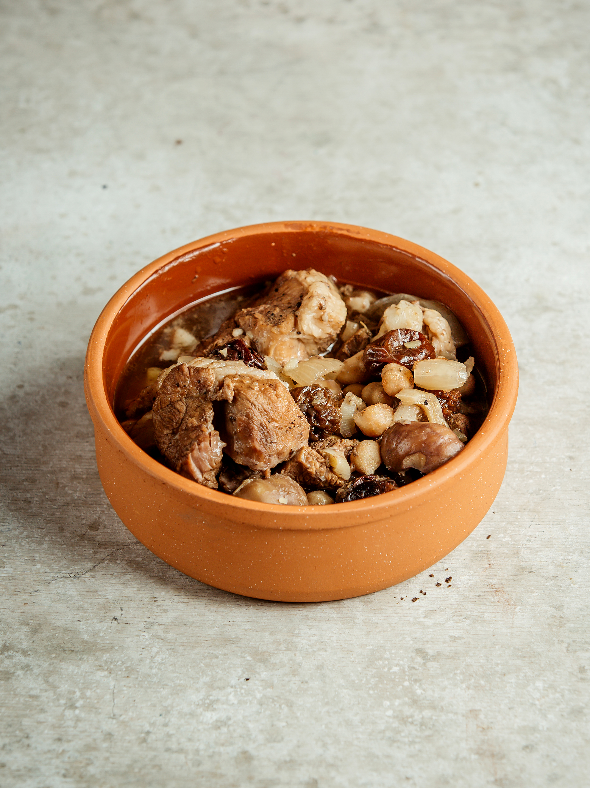

Home

Ingredients:
- Chicken or Pork
- Water or Stock
- Black Pepper
- Garlic
- Bay Leaves
- Soy Sauce
- Vinegar
Steps:
-
Sear the chicken or Pork. Pat your choice of meat dry with paper towels,
season with salt, then sear in a Dutch oven or a large heavy-bottomed pot until brown all over.
Transfer the meat into a plate.
-
Toast garlic cloves, dried bay leaves, and Black Pepper in the residual oil, then add water,
soy sauce, and vinegar, scraping any brown bits on the bottom. Return chicken to the pot and
simmer until cooked through.
-
Broil the chicken. Place the chicken on a foil-lined baking sheet and broil until browned.
Serve with rice. Pile rice onto a plate, add a chicken piece or two, then drench everything with sauce.